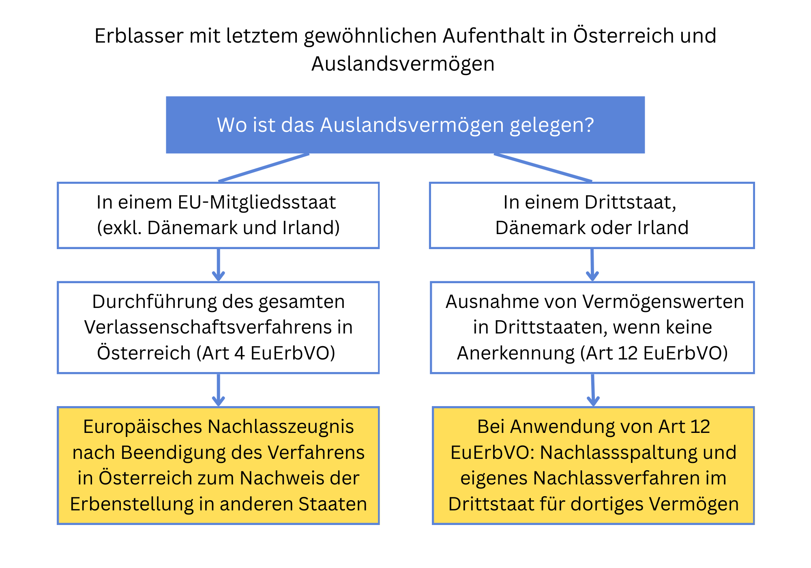

Was ist bei Vermögen des Erblassers im Ausland zu beachten?
Aufgrund der fortschreitenden Globalisierung kommt es immer häufiger vor, dass Personen, die in Österreich versterben, Vermögen im Ausland haben, etwa Liegenschaften oder Kontoguthaben. Typischerweise sind dies Personen, die entweder lange im Ausland gelebt und gearbeitet haben und im Ruhestand nach Österreich zurückkehren oder wenn ein Ehepartner ursprünglich aus dem Ausland stammt und in Österreich verstirbt. Die Komplexität der Nachlassabhandlung hängt dann insbesondere davon ab, ob das Vermögen innerhalb oder außerhalb der EU gelegen ist. Erfahren Sie hier, welche Besonderheiten bei Vermögen des Erblassers im Ausland zu beachten sind.
Zuständigkeit österreichischer Gerichte und anwendbares Recht
Gemäß Art 4 EU-Erbverordnung (in der Folge kurz: EuErbVO) sind österreichische Gerichte dann für die gesamte Nachlassabhandlung zuständig, wenn der Erblasser zum Todeszeitpunkt seinen gewöhnlichen Aufenthalt in Österreichhatte. Auf die Staatsangehörigkeit kommt es bei der Zuständigkeit nicht (mehr) an. Damit sind österreichische Gerichte z.B. auch dann zuständig, wenn eine Person mit US-Staatsangehörigkeit ihren letzten gewöhnlichen Aufenthalt in Österreich hatte. Die Zuständigkeit Österreichs bezieht sich in diesem Fall auf sämtliche "Entscheidungen in Erbsachen", d.h. nicht nur auf die außerstreitige Abhandlung vor dem Verlassenschaftsgericht, sondern auch auf streitige Verfahren mit erbrechtlichen Charakter, wie z.B. Pflichtteilsklagen.
Gemäß Art 21 Abs 1 EuErbVO richtet sich auch das anwendbare materielle Erbrecht ("Erbstatut") nach dem letzten gewöhnlichen Aufenthalt des Erblassers. Das anwendbare Erbrecht gilt für die gesamte Rechtsnachfolge von Todes wegen und bestimmt insbesondere, wer gesetzlicher Erbe ist und ob es Pflichtteilsansprüche gibt (Art 23 EuErbVO). Auch beim anwendbaren Erbrecht kommt es nicht mehr primär auf die Staatsangehörigkeit an (vor dem Inkrafttreten der EuErbVO war die Rechtslage anders). Damit würde z.B. auch bei einem US-Staatsangehörigen, der in Österreich lebt, mangels letztwilliger Verfügung österreichisches Erbrecht zur Anwendung gelangen. Gemäß Art 22 Abs 1 EuErbVO haben Personen anderer Staatsangehörigkeit allerdings die Möglichkeit, in einer letztwilligen Verfügung das Erbrecht jenes Staates zu wählen, dem sie angehören. Dies kann auch das Erbrecht eines Drittstaates außerhalb der EU sein (Art 20 EuErbVO).
Die EuErbVO strebt den sog. Grundsatz der Nachlasseinheit an, also dass das Erbrecht für die gesamte Rechtsnachfolge von Todes wegen gilt, unabhängig wo das Vermögen gelegen ist, und ob dieses innerhalb oder außerhalb der EU gelegen ist (zu Ausnahmen im Zusammenhang mit Drittstaaten siehe noch weiter unten).
Vermögenswerte in einem anderen EU-Staat
Weitgehend unproblematisch ist die Situation, wenn der in Österreich verstorbene Erblasser Vermögen in einem anderen EU-Staat hatte, z.B. eine Liegenschaft in Deutschland, ein Bankkonto in Italien oder einen Gesellschaftsanteil an einer französischen Kapitalgesellschaft (SARL). Auch in diesem Fall führt das österreichische Verlassenschaftsgericht idR ein normales Verlassenschaftsverfahren durch.
Gelangt österreichisches Erbrecht zur Anwendung, so endet das Verlassenschaftsverfahren genauso mit einem Einantwortungsbeschluss, weil zwischen dem Tod des Erblassers und der Beendigung des Verlassenschaftsverfahrens der Nachlass als juristische Person besteht (§§ 546, 547 ABGB). Bis zur Rechtskraft des Einantwortungsbeschlusses ist die Verlassenschaft als juristische Person daher aus Sicht des österreichischen Erbrechts auch z.B. Eigentümerin einer deutschen Liegenschaft oder Inhaberin eines italienischen Bankkontos. Der Einantwortungsbeschluss hat also konstitutive Wirkung.
Gelangt hingegen aufgrund einer Rechtswahl z.B. deutsches Erbrecht zur Anwendung, so wird vom österreichischen Verlassenschaftsgericht statt dem Einantwortungsbeschluss ein feststellender Beschluss über das Erbrecht erlassen, weil das deutsche Erbrecht keine Verlassenschaft als juristische Person zwischen Tod und Beendigung des Verlassenschaftsverfahrens kennt. Vielmehr geht nach deutschem Erbrecht das Vermögen bereits mit dem Tod des Erblassers direkt auf die Erben über (§ 1922 BGB), ein "Erbschein" eines deutschen Nachlassgerichts hat daher - im Gegensatz zum österreichischen Einantwortungsbeschluss - nur deklarative Wirkung. Zur Vermeidung von Widersprüchen passt sich das österreichische Verfahrensrecht daher dem deutschen materiellen Erbrecht an, indem in diesem Fall - ähnlich dem Erbschein eines deutschen Nachlassgerichts - bloß ein feststellender Beschluss über die Erbenstellung erlassen wird (§ 181a AußStrG). Gemäß Art 23 Abs 2 lit e EuErbVO richtet sich nämlich auch der Erbschaftserwerb (z.B. direkter Erwerb oder zuerst Übergang auf den Nachlass als juristische Person) nach dem materiellen Erbrecht, sodass eine Anpassung des Verfahrensrechts unionsrechtlich geboten ist.
Liegt der rechtskräftige Beschluss des österreichischen Verlassenschaftsgerichts vor, so erstellt der Gerichtskommissär (Notar) ein sog. "Europäisches Nachlasszeugnis" (Art 62 EuErbVO bzw. § 181b AußStrG). Mit dem Europäischen Nachlasszeugnis, das einheitlich in der EuErbVO geregelt ist, soll der Erbe in die Lage versetzt werden, sein Erbrecht in anderen EU-Mitgliedstaaten nachzuweisen, ohne dass es dort erneut eines besonderen Verfahrens zur Erbenfeststellung bedarf (Art 69 EuErbVO). Das Europäische Nachlasszeugnis kann daher als Nachweis für die Eintragung des Eigentumsrechts in einem deutschen Grundbuch herangezogen werden (siehe etwa § 35 deutsche Grundbuchsordnung; in Österreich ist das Europäische Nachlasszeugnis in § 33 Abs 1 lit d GBG als Urkunde für die Einverleibung des Eigentumsrechts im Grundbuch anerkannt). Die Verwendung des Europäischen Nachlasszeugnisses ist jedoch nicht verpflichtend (Art 62 Abs 2 EuErbVO). Es kann daher sein, dass z.B. eine ausländische Behörde zur Verwaltung von Registern über Liegenschaftseigentum im Einzelfall auch einen österreichischen Einantwortungsbeschluss (beglaubigt übersetzt und idR mit Apostille) als ausreichend ansieht.
Vermögenswerte in einem Drittstaat
Auch bei Vermögenswerten in einem Drittstaat gilt aus Sicht der EuErbVO der Grundsatz der Nachlasseinheit. Drittstaaten sind zunächst alle Staaten, die nicht zur EU gehören (z.B. USA, UK, Schweiz). Auch innerhalb der EU gibt es aber zwei Staaten, die für Zwecke der EuErbVO wie Drittstaaten behandelt werden, und zwar Dänemark und Irland. Grundlage für Rechtsakte im Europäischen Erbrecht sind die Bestimmungen im AEUV (Vertrag über die Arbeitsweise der Europäischen Union) über den "Raum der Freiheit, der Sicherheit und des Rechts". Aufgrund des Protokolls Nr. 21 zum AEUV sind Dänemark und Irland nicht am "Raum der Freiheit, der Sicherheit und des Rechts" beteiligt. Die EuErbVO hat in diesen Staaten sohin keine Geltung, sodass sie in Fragen des Internationalen Erbrechts wie Drittstaaten behandelt werden.
Hatte der Erblasser seinen gewöhnlichen Aufenthalt in Österreich, so gelangt auf die Rechtsnachfolge von Todes wegen auch z.B. hinsichtlich in der Schweiz gelegenen Vermögens aus Sicht der EuErbVO österreichisches Erbrecht zur Anwendung. Sollte der Erblasser gemäß Art 22 EuErbVO eine Rechtswahl zugunsten seines Heimatstaates getroffen haben, müsste das österreichische Verlassenschaftsgericht z.B. zur Gänze Schweizer Erbrecht anwenden.
Im Falle von Vermögenswerten in einem Drittstaat kann das in der Erbsache angerufene Gericht, also z.B. das österreichische Verlassenschaftsgericht, auf Antrag einer der Parteien beschließen, über einen oder mehrere dieser Vermögenswerte nicht zu befinden, wenn zu erwarten ist, dass seine Entscheidung in Bezug auf diese Vermögenswerte in dem betreffenden Drittstatt nicht anerkannt oder gegebenenfalls nicht für vollstreckbar erklärt wird (Art 12 EuErbVO). Voraussetzung für die Ausnahme von Vermögenswerten aus der Abhandlung nach Art 12 EuErbVO ist sohin eine sog. "negative Anerkennungsprognose" betreffend diese Vermögenswerte im Drittstaat. Der OGH ist in der Entscheidung 2 Ob 124/18a betreffend Vermögenswerte in der Schweiz von einer solchen mangelnden Anerkennung österreichischer Einantwortungsbeschlüsse ausgegangen. Bei der Anwendung von Art 12 EuErbVO handelt es sich um eine Ermessensentscheidung, wobei insbesondere auch zu berücksichtigen ist, ob in Bezug auf die im Drittstaat befindlichen Vermögenswerte dort bereits ein Nachlassverfahren anhängig ist (RIS-Justiz RS0132525). Wird in einem Verlassenschaftsverfahren ein solcher Antrag nach Art 12 EuErbVO gestellt, so hat das Verlassenschaftsgericht darüber einen Beschluss zu fassen, der selbständig im Instanzenzug vor Beendigung des Verlassenschaftsverfahrens überprüfbar ist.
Die Anwendung von Art 12 EuErbVO kann theoretisch auch in streitigen Verfahren wie z.B. Pflichtteilsprozesses erfolgen, weil Art 12 EuErbVO von der Entscheidung "in Erbsachen" generell spricht. Dort erfolgt aber die Anwendung typischerweise seltener, weil es nicht um die Anerkennung einer Entscheidung im Nachlassverfahren geht, sondern um die Anerkennung eines vollstreckbaren Leistungsurteils. Es kann daher z.B. durchaus sein, dass ein Nachlassgericht in einem US-Bundesstaat (probate court) einen österreichischen Einantwortungsbeschluss nicht anerkennt und selbst ein Nachlassverfahren durchführt (probate proceeding), sehr wohl aber ein Leistungsurteil (judgement) hinsichtlich von Pflichtteilsansprüchen anerkennt. In letzterem Fall wäre auch das in den USA belegene Vermögen mangels negativer Anerkennungsprognose im österreichischen Pflichtteilsprozess als Bemessungsgrundlage zu berücksichtigen und ein auf die Anwendung von Art 12 EuErbVO gerichteter Antrag des Beklagten abzuweisen.
Sollte Art 12 EuErbVO zur Anwendung gelangen, würde eine sog. "Nachlassspaltung" vorliegen, also dass das in unterschiedlichen Staaten belegene Vermögen des Erblassers hinsichtlich der Rechtsnachfolge unterschiedlichen Rechtsordnungen unterliegt. Dies hätte auch z.B. Einfluss auf Pflichtteilsansprüche, weil manche Rechtsordnungen, wie etwa das Erbrecht der meisten US-Bundesstaaten kein Pflichtteilsrecht für Kinder vorsieht. In diesem Fall wäre nur das Vermögen, welches der österreichischen Rechtsordnung unterliegt, bei der Pflichtteilsermittlung zu berücksichtigen.
Gerade im anglo-amerikanischen Rechtskreis gibt es z.B. hinsichtlich von Aktiendepots oft die Vereinbarung eines Anwachsungsrechts des Überlebenden auf den Todesfall (joint tenancy with the right of survivorship). Dieses Anwachsungsrecht ist aus Sicht der EuErbVO in aller Regel nicht erbrechtlicher Natur, doch kann die Vereinbarung eines Anwachsungsrechts aus Sicht des Pflichtteilsrechts wie eine Schenkung zu Lebzeiten zu werten sein, sodass es zur Erhöhung der Bemessungsgrundlage bei Pflichtteilsansprüchen kommt. Dies steht natürlich unter der Prämisse, dass ein Erbstatut zur Anwendung gelangt, welches wie das österreichische Recht ein Pflichtteilsrecht vorsieht.
Haben Sie noch Fragen zum Thema Vermögen im Ausland im Verlassenschaftsverfahren?
Eine frühzeitige Beratung schafft Klarheit und hilft, Risiken im Verlassenschaftsverfahren rechtzeitig zu vermeiden. Ich unterstütze Sie bei einer rechtssicheren Einschätzung Ihrer Situation.